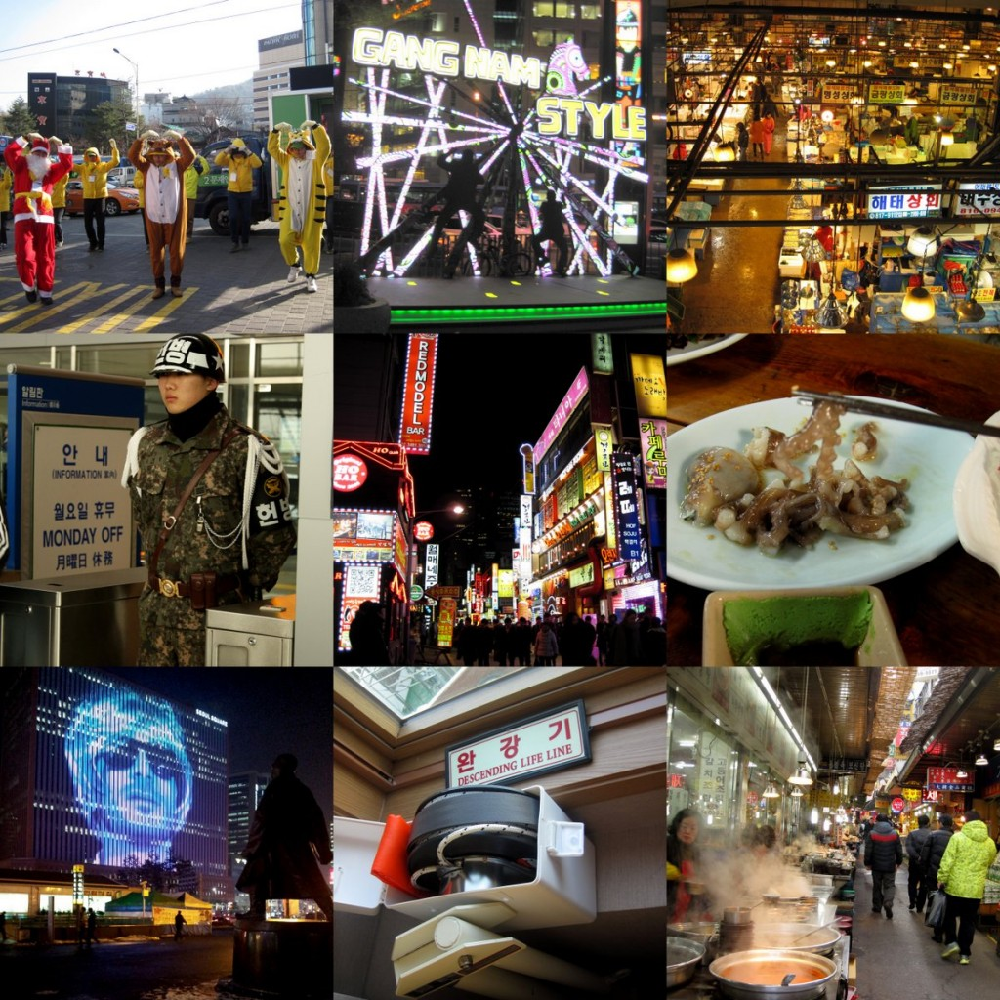

Second part of my trip,I armed myself with a metro card, a metro map and a rough plan – it was time to experience Seoul. In Seoul I put my skills of pointing and smiling into great use. It was pretty much, walk past, oh that looks nice and go in. Google maps was in Korean so finding places was a little hit and miss. I must say that at this point of the trip I was badly needing a stomach transplant. I love spice, sour and meat but I must have been made a wuss by my stay in Australia (haha) and my stomach was crying uncle. Despite this, at the Noryangjin Fish Market I had to try Sannkji – live octopus sliced up and eaten raw with sesame oil. The tentacles are still moving and it’s the first time I’ve thought “Darnit, tasty morsel, stop clinging to my plate and get into my mouth”. It had a great suction grip on my plate and sometimes stuck to my teeth and wriggled going down. It was tasty but I couldn’t bring myself to eat the octopus head and eye, the skin still writhing and shrinking. There are also the markets and shopping streets, I was in Myeongdong and Nangdaemun market and got lost wandering and gazing at the neon lights and christmas decorations. I had lots of street food which was delicious and mostly meaty and spicy. At the Gangnam station, there was a Gangnam Style platform there! Couldn’t bring myself to dance on it, my natural modesty (heh). But with presidential elections in the next few days there was flash mob dancing for candidates. Finally the Demilitarized Zone (DMZ) between North and South Korea. South Korean men have a compulsory 2 year military service and there are US forces posted in Seoul and Seoul itself is within striking distance from North Korea, so tensions run high. Add to that, 3 tunnels have been discovered from the North Korean side to South Korea – the 3rd tunnel is 1 hour distance from Seoul and can take 30 000 soldiers an hour with light weapons. There are 20 tunnels expected to be existing but undiscovered. The 3rd tunnel itself is 73m below ground and the whole experience (no photographs allowed) was a little daunting. I enjoyed discovering Seoul. Ski and hiking trip next time, I reckon. Next stop, a brief stop in KL and then Singapore. Shi ps: The descending life line from my room – I’ve seen similar ones in Tokyo, but it’s always interesting because there are so many health and safety issues in some countries. That, and I get a mental image of old Asian people (socks in bedroom slippers) abseiling out of their hotel windows, commando style with explosions and flames behind them.
© 2013 admin
